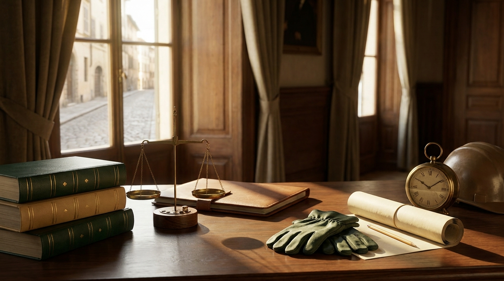

Tempo tuta e formazione sicurezza: quando rientrano nell'orario di lavoro
Il tempo dedicato a indossare la divisa e quello della formazione obbligatoria sulla sicurezza possono rientrare nell'orario di lavoro. La conseguenza non è solo retributiva: incide sulla base imponibile contributiva, con esposizione verso INPS e INAIL. Per i datori di lavoro, in particolare nella sanità privata, è un tema di gestione del rischio da affrontare prima di un eventuale accertamento ispettivo.

Il tema
Due voci spesso trascurate nella contabilizzazione dell'orario tornano al centro dell'attenzione: il cosiddetto "tempo tuta" (il tempo necessario a indossare e dismettere la divisa o i dispositivi di protezione) e il tempo dedicato alla formazione obbligatoria in materia di sicurezza.
La questione non è meramente teorica. Qualificare questi intervalli come orario di lavoro significa, di regola, doverli retribuire; e ciò che è retribuzione concorre, salvo eccezioni, alla base imponibile su cui si calcolano contributi previdenziali e premi assicurativi.
Inquadramento normativo
La nozione di orario di lavoro è fissata dall'art. 1 del D.Lgs. 66/2003: è tale "qualsiasi periodo in cui il lavoratore sia al lavoro, a disposizione del datore di lavoro e nell'esercizio della sua attività o delle sue funzioni".
Su questa base, l'orientamento di legittimità in tema di tempo di vestizione individua un criterio guida: l'eterodirezione. Quando le modalità di indossamento della divisa o dei DPI sono imposte dal datore di lavoro — per ragioni igienico-sanitarie, di sicurezza o organizzative, ad esempio con obbligo di cambio in azienda e in luoghi predeterminati — il tempo relativo rientra nell'orario di lavoro. Quando invece il lavoratore resta libero di scegliere tempi e luoghi, l'attività di vestizione tende a collocarsi fuori dall'orario retribuibile. Non ogni cambio d'abito, dunque, diventa automaticamente orario di lavoro: la discriminante è il grado di controllo del datore.
Quanto alla formazione, l'art. 37, comma 12, del D.Lgs. 81/2008 stabilisce che essa deve avvenire durante l'orario di lavoro e non può comportare oneri economici a carico dei lavoratori. La formazione obbligatoria sulla sicurezza è quindi, per espressa previsione di legge, tempo di lavoro.
Il passaggio dall'orario alla contribuzione non è automatico, ma poggia su un fondamento preciso: l'art. 12 della L. 153/1969 definisce in senso ampio la retribuzione imponibile, ricomprendendovi tutto ciò che il lavoratore riceve in dipendenza del rapporto. Se il tempo tuta eterodiretto e la formazione obbligatoria sono orario di lavoro e come tali retribuiti, i relativi compensi confluiscono in quella base imponibile.
Implicazioni pratiche
Per il datore di lavoro — caso tipico, la struttura sanitaria privata, dove divisa e DPI sono imposti da rigide esigenze igieniche — l'effetto è duplice.
Sul piano retributivo, occorre verificare se questi tempi siano già riconosciuti dal contratto collettivo o dalla prassi aziendale.
Sul piano contributivo, l'omessa contabilizzazione può tradursi in differenze su contributi INPS e premi INAIL, con il rischio di recuperi in sede ispettiva, oltre a sanzioni e interessi. È qui che il tema diventa una voce di rischio aziendale concreta, non un dettaglio formale.
Cosa fare in concreto
- Mappa le voci a rischio. Censisci le mansioni in cui divisa, DPI o cambio in azienda sono imposti dal datore, distinguendole dai casi in cui il lavoratore resta libero.
- Verifica il contratto collettivo applicato. Controlla se prevede già un trattamento per il tempo di vestizione e per la formazione, e con quali modalità.
- Documenta le ore di formazione. Tieni traccia di durata, collocazione oraria e retribuzione dei corsi ex art. 37, così da poterne dimostrare la corretta gestione.
- Allinea buste paga e flussi contributivi. Accerta che i tempi qualificabili come orario di lavoro confluiscano correttamente nella base imponibile dichiarata a INPS e INAIL.
- Valuta una verifica preventiva. È opportuno affrontare il tema in via preventiva, riesaminando policy interne e regolamenti aziendali prima che la questione emerga in un controllo.
La materia resta sensibile alle specifiche circostanze di fatto: l'organizzazione concreta del lavoro è ciò che, caso per caso, sposta l'ago della bilancia.
Disclaimer
Contributo informativo a cura di Tamburro & Partners Avvocati. Non costituisce parere legale.
Ogni storia di lavoro ha i suoi tempi.
Se gestisci HR e vuoi un confronto su contenzioso, ispezioni o licenziamenti, scrivi allo studio. Ti rispondiamo entro un giorno lavorativo.